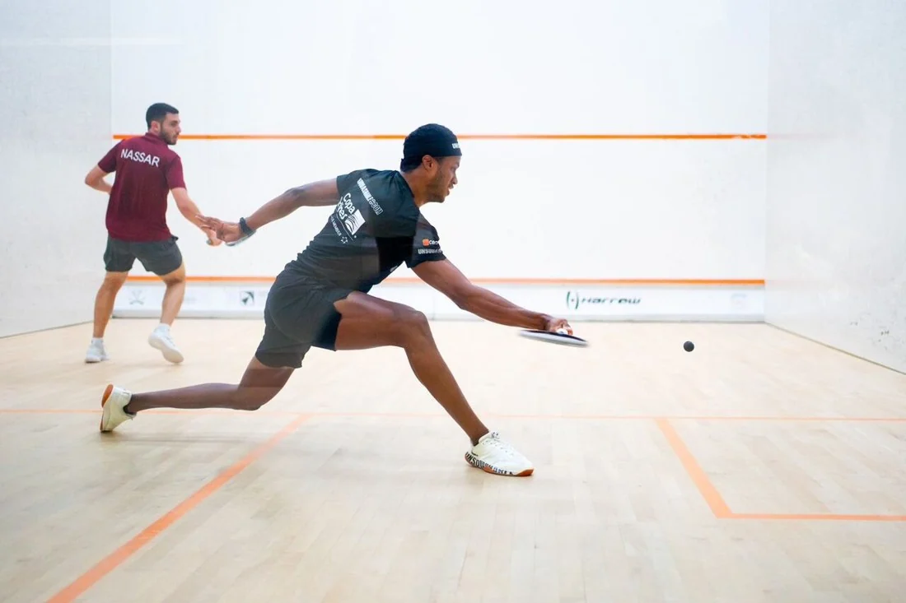

Santiago
XIX Juegos Panamericanos
Oro en doblesCampeón panamericano
Rumbo a Los Ángeles 2028.
Aspiración olímpica, no clasificación.
Jugador colombiano de squash profesional.
Oro en dobles masculinos de squash en los XIX Juegos Panamericanos Santiago 2023, junto a Juan Camilo Vargas.
Del podio continental al circuito profesional

ORO PANAMERICANOLa dupla que vuelve / Dobles masculinos
XIX Juegos Panamericanos
Oro en doblesPanamericano de Mayores
Campeones de doblesColombia 2–1 México
01 / Dobles masculinos
Santiago 2023
Ronald PalominoJuan Camilo Vargas
Oro en dobles masculinos
Río 2025
Ronald PalominoJuan Camilo Vargas
Campeones de dobles masculinos
Fuentes: Panam Sports y PanAm Squash (Santiago); Comité Olímpico Colombiano (Río).
02 / Dobles mixtos
Con Lucía Bautista Sarmiento en los dos podios de dobles mixtos.
Ver resultados por certamen en la agendaAsunción 2026
Oro en dobles mixtos
Rosario 2026
Bronce en dobles mixtos
03 / Colaboración
Un bloque de horas de cancha y preparación física para trabajar el paso del individual al dobles.
Antes de proponerlo, el equipo técnico debe validar la disponibilidad de pareja, la carga y el costo.
04 / Calendario y resultados
Corte: .
Sin participaciones individuales confirmadas al corte.
Disputado
Oro en dobles con Juan Camilo Vargas (H01) y oro por equipos (H02). Fechas de las crónicas, no del rango de competencia: 2023-11-04 y 2023-11-05. Equipos: www.panamsports.org
Disputado
Campeón en ambas modalidades (H03); dobles con Juan Vargas: olimpicocol.co
Disputado
Oro con Lucía Bautista Sarmiento (H04). Fechas de todo el campeonato: panamsquash.com
Disputado
Bronce individual y bronce con Lucía Bautista (H05). Fechas y sede de squash: santafe2026.ar
Disputado
FollowSquash (secundaria) documenta que Andrés Herrera avanzó frente a Palomino en segunda ronda. No se usa el parcial ni se infiere motivo de cierre del partido. Sede y fechas del organizador: www.crsquashopen.com